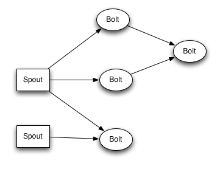

storm
Table of Contents
1 storm
- Documentation · nathanmarz/storm Wiki https://github.com/nathanmarz/storm/wiki/Documentation
- Storm, distributed and fault-tolerant realtime computation : http://storm-project.net/
- http://www.slideshare.net/nathanmarz/storm-distributed-and-faulttolerant-realtime-computation
1.1 overview
- http://storm.apache.org/documentation/Tutorial.html
- http://storm.apache.org/documentation/Concepts.html
因为storm是流式处理系统, 应用逻辑可以是长久运行的, 所以在上面运行的应用不称为Jobs而称为Topologies.
storm集群由三个部分组成: 1) master(nimbus) 2) coordinator(zookeeper) 3 ) worker(supervisor). 如果和MapReduce框架对应起来的话, 那么nimbus <-> jobtracker, supervisor <-> tasktracker.

一个topology分为spout和bolt两大类组件. 其中spout负责从外部源读入数据注射入系统, 而bolt则负责逻辑业务本身. 这里bolt仅仅是逻辑单元, 在物理层面执行的时候可以通过设置parallelism相关参数增加tasks数量来提高吞吐. spout/bolt以及bolt/bolt之间相互传递数据都是由storm framework来管理的, 用户只需要编写处理数据逻辑即可.

1.2 grouping
输入输出数据模型是key-value model. 其中key可以用来进行grouping. 所以grouping就是决定数据如何向下面一层分发. storm提供下面几种grouping方式
- shuffle grouping. 随机分布
- fields grouping. 按照k分布
- all grouping. 人手一份
- global grouping. 只传给某一个task. 通常来说是编号最小的那个.
- direct grouping. producer指定传给某个task. note(dirlt): 破坏透明性
1.3 distributed-RPC
用storm可以很容易实现DRPC. 似乎这个功能非常有用, 但是我现在还没有想到一个比较合适的场景.

1.4 parallelism
storm parallelism有三个概念 1) worker process 2) executor 3) task. 下面这张图解释了三者之间的关系

- worker process 只属于某个topology. 在一个node上可能存在多个work processes. (对应进程)
- executor 属于某个work process. 一个executor只运行某一个spout/bolt. (对应线程)
- task 属于某个executor. storm里面最小的执行单元. (#executor <= #task. 但是通常两者相等)
1.5 reliability
如何保证每条消息能够都被处理? 我们需要先来定义"消息被完全处理". 在流式系统中一个input tuple到最后结束可能会产生许多tuples并且中途也会有很多tuples生成. 如果我们将这些生成关系画成树的话

一个input-tuple产生许多中间tuples. bolts只有对input-tuple以及每个中间输入消息给予确认的话, 才能认为这个input-tuple被完全处理. 当然某些应用只要求第一个bolt处理了input-tuple就OK了. 如果input-tuple在某段时间内没有被确认的话, 那么这个input-tuple会重发. note(dirlt):out-of-order!
如何将中间消息和input-tuple关联起来? storm API提供了 anchoring 接口. anchoring就是将某个output-input和input-tuple关联起来. 这样output-tuple里面其实带上了input-tuple id. 如果我们ack output-tuple时, storm会从output-tuple里面抽取input-tuple id并且ack这个input-tuple. storm API来提供了 multiple-anchoring 接口允许某个output-tuple和多个input-tuple关联起来.
storm如何实现消息确认? storm会为每个output-tuple分配一个random 64bit id. storm会启动acker服务来接收spout/bolt返回的ack消息并且通过维护一个hashmap对tuple进行追踪. 整个过程是
- 当spout从某个输入源读取tuple的时候, 会为这个tuple生成一个tuple-id. 这个tuple-id要求能够回放. 也就是如果spout拿到这个tuple-id的话, 还可以从输入源读取这个tuple.
- 当spout/bolt处理tuple的时候, spout/bolt会向acker发送(tuple-id, input-tuple-id, output-tuple-id) note(dirlt): tuple-id是spout分配的id, input-tuple-id是上一层过来的tuple id.
- acker处理逻辑是: note(dirlt): 我的推断
- 初始化 hashmap[tuple-id] = (spout-task-id, val[default = 0]) # 这里spout-task-id追踪是为了知道要那个spout-task重发tuple.
- 处理ack hashmap[tuple-id].val xor = (input-tuple-id xor output-tuple-id)
- 如果某个tuple-id, hashmap[tuple-id].val在一段时间(超时时间)内没有变为0的话, 那么就需要重发这个tuple-id对应的tuple.
- 反之如果变成0的话, 那么就可以认为这个tuple被正确处理掉了.
理论上如果消息没有被完全处理的话在中途过程也有可能出现0x0, 但是概率非常小. 并且在真实情况下只有tuple没有被正确处理的时候才会丢数据. 综合考虑概率非常小.
我们这里举个例子, 假设topology T如下:
A -> B -> D -> C
其中spout A从输入源读取tuple-id(=123). 发出两个tuples(t1 = 0x12345678, t2 = 0x23456781)被两个bolt B,C处理分别产生tuples(t3 = 0x34567812, t4 = 0x45678123), 然后t2,t3被D处理.
- 初始化 hash(123) = 0x0
- A发出两个t1 hash(123) = 0 xor (t1) 0x12345678 xor (t2) 0x23456781 = 0x317131f9
- B处理t1 hash(123) = 0x317131f9 xor (t1) 0x12345678 xor (t3) 0x34567812 = 0x17131f93
- C处理t2 hash(123) = 0x17131f93 xor (t2) 0x23456781 xor (t4) 0x45678123 = 0x7131f931
- D处理t3,t4 hash(123) = 0x7131f931 xor (t3) 0x34567812 xor (t4) 0x45678123 = 0x0
默认storm是启动1个acker服务来进行追踪. 但是如果消息量非常大的话那么可以启动多个acker服务来进行追踪. 一旦acker服务发现某个tuple需要重传的话, 会根据hashmap里面的spout-task-id来通知对应的spout.